Not a Steve Jobs chatbot. A Steve Jobs review.
It reads what you actually built, runs it, and tells you the verdict, the insight underneath, what to cut, the next move, and the one sentence that sells it. Starting with its own README.

> /steve verdict README.md Mode: verdict · this repo's own README Verdict. Not yet. The most disciplined README on the subject of honest product feedback proves itself entirely on a product that does not exist. What's wrong. 1. The proof is invented, and it exists in three different versions. The block here, the example file and the website are three texts of the same run, all labelled real output. Anyone who opens two stops believing the third. 2. Eleven headings, sixteen hundred words, and you say everything twice. Inside your own demo: "You wrote eleven headings before you told me what it does." 3. SETUP.md is in the repo root. Its last step reads "run the skill on this README and fix whatever it says." You shipped the note that says it is not finished. The one thing. The sentence is already there. What is missing is the line under it: "Point it at this README. Here is what it said." What Steve would say. (imagined) "You built a machine for telling people the truth about their work, and then you demoed it on a company you made up."
The skill's verdict on this project's own README, unedited. Every finding was true. All three were fixed in the commit that followed.
Nobody needs that. You need the other thing: someone who looks at the thing you actually made, this afternoon, and says the sentence you have been avoiding.
Reads your files, runs your CLI, counts the steps from clone to the first moment something works. It never reviews a description of your product.
A critique that stops at the critique is a roast. Every reply hands back the new headline, the three features that stay, the error message that now tells you what to do.
Venue, year, link and a confidence marker on all seventy lines, plus a table of the famous ones he never said. A build job fails if a quote loses its source. Imagined lines are labelled imagined.
The Cube. MobileMe. “Seven-inch tablets are dead on arrival.” And when to stop listening to him: accessibility, safety-critical domains, and your own usage data.
One screen. Verdict first. If a sentence does not change what you do next, it is not in there.
He could be cruel. This is not that. Brutal about the thing, generous about the person who made it.
We had eleven. We crossed out five.
| Mode | The question it answers | Give it |
|---|---|---|
verdict | What would Steve say about this? | a README, a landing page, a UI, a CLI, an API, a pull request |
why | What is the insight underneath? | a product, a feature request, a strategy, a nagging feeling |
cut | Which seven do we cross out? | a roadmap, a backlog, a settings page, a pricing table |
next | What is the one bet? | a company, a repo, a plateau, a competitor's move |
pitch | How do I say this in one sentence? | a tagline nobody gets, a first screen, a Show HN title |
email | How do I answer this? | a feature request, a complaint, a partnership ask |
No mode? It picks one and tells you which.
The same question, asked twice. A Chrome extension that summarizes articles: 4,000 weekly users, no revenue, three features planned.
“Focus is about saying no to the good ideas. You have Q&A chat, Notion export, and a paid tier on the roadmap… Jobs would likely favor the one that deepens the core promise… Want me to help you sketch the pricing page copy?”
Five headings, a pros-and-cons, and a question at the end. Nothing you could not have written yourself.
“Stop summarizing articles. Start remembering them. In two years ‘summarize this page’ is a free button in Chrome. The article is the wrong unit. The reader is the unit. Four thousand people have been handing you what they read, every week, for months.”
A bet, the arithmetic behind it, the three moves, what to say no to, and the signal that would prove it wrong.
Two lines in Claude Code. One line anywhere else.
/plugin marketplace add bergamett/steve-jobs-skill /plugin install steve@steve
npx skills add bergamett/steve-jobs-skill
Claude Code, Codex, Cursor, Gemini CLI, OpenCode.
git clone https://github.com/bergamett/steve-jobs-skill cp -r steve-jobs-skill/skills/steve ~/.claude/skills/steve
There is no folder to read from, so paste dist/steve-full.md — the same skill flattened into one file.
Then type /steve and whatever is bothering you.
No. Harsh is easy and useless. The skill runs a specific sequence — start from the experience, find the one thing, take things away, check the parts nobody sees, decide, rewrite — and each step is there because he did it, repeatedly, on the record.
It tells you what to delete and what you get back for deleting it. If your list of ten is genuinely three products, it says that instead.
Say so. The skill names the fact that would reverse each verdict, because he changed his mind on native apps, on video on the iPod, and on a product name he said he hated. A judgment that no evidence can reverse is a pose.
He did. It does not. Specificity does the same job harder: “this is a settings page pretending to be a product” lands better than an insult, and it tells you what to fix.
Yes. It is Markdown. Any agent that reads SKILL.md can run it, and you can paste the file into a chat window as a system prompt.
No. It is not affiliated with, endorsed by, or connected to Apple Inc., the Steve Jobs Archive, or the estate of Steve Jobs. It is a lens for looking at your own work, built from what he said in public. Where it writes in his voice, it labels that as imagined.